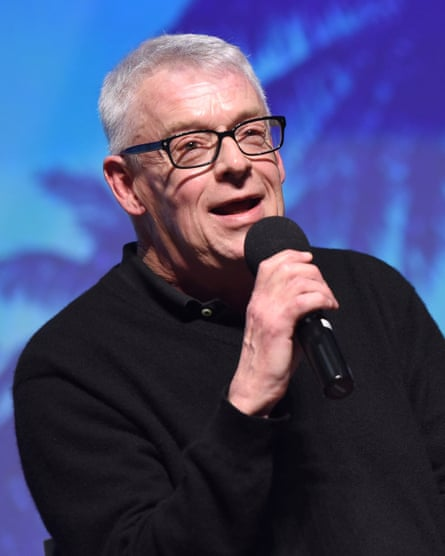
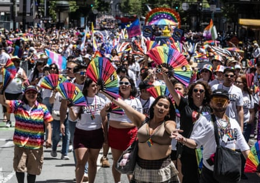
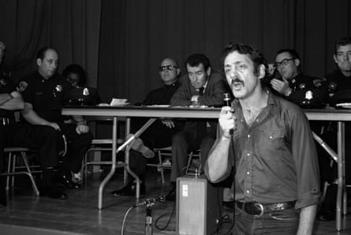

A s San Francisco ’s pride festivities came to a close last week, a cloud hung over the otherwise joyful celebrations as the city’s LGBTQ+ community learned that the US government had stripped a naval ship of its name honoring the gay rights pioneer Harvey Milk.
Donald Trump ’s defense secretary, Pete Hegseth, claimed the action showed the administration’s commitment to “taking the politics” out of military naming conventions. San Francisco’s queer community saw things differently.
For many, the move was yet another example of Trump taking a swipe at progressive values. To others, the decision to remove Milk’s name from the frigate represented something more sinister: an intention, on the part of an emboldened administration, to take the LGBTQ+ community out of public view and to strike their accomplishments from the historical record.
“On its own, it is not the most significant offense that we’ve witnessed in the past six months,” said Marc Stein, a professor of history at San Francisco State University who researches sexuality and politics. “But when combined with so many other things, it sends a powerful message.”
Hegseth’s announcement is the latest attack on Milk’s legacy from conservatives in California and on the national stage. In 2023, the southern California city of Temecula made news when its school board attempted to remove references to Milk from elementary school textbooks. Before that, it was revealed that Tucker Carlson, while a college student, had apparently been connected to a society celebrating Milk’s murderer .
Since Trump took office, the rollback of LGBTQ+ rights and visibility has only accelerated, from a directive to purge the military of transgender service members , to a supreme court decision allowing K-12 students to opt out of reading materials with LGBTQ+ themes .
Taken together, LGBTQ+ advocates and community members fear that much of the progress made to secure their rights since Milk’s assassination in 1978 is in peril.
“The renaming of the ship is part of a broader pattern wherein the Trump administration and its allies are trying to roll back the advances of the last several decades,” said Stein.
At the Cinch Saloon, a historic gay bar in San Francisco’s Castro district, June’s Pride month celebrations were held against a backdrop of conversations about the fate of the community. Bartender Eric Berchtold expressed fear that the administration is working up to rescind the right to same-sex marriage. “It’s blatant malice,” Berchtold said. “They want to erase us and eradicate our history like we don’t exist.”
Suzanne Ford, executive director of San Francisco Pride, said that fears of rolling back progress have been felt most acutely by older members of the community who were part of the gay liberation movement in the 1960s and 70s.
Cleve Jones speaks in Palm Springs, California, in 2017.Photograph: Vivien Killilea/Getty Images
Among those affected people are Cleve Jones, an activist and friend of Milk’s who worked in Milk’s office when he was city supervisor. “I can remember when we were criminalized, when we were routinely beaten and fired, when you could not have a job if you were known to be gay,” said Jones.
When Milk was elected as city supervisor in 1977, he was the country’s first openly gay politician. Two decades prior, he had been forced to resign from the navy due to his sexuality.
That’s why publicly displaying Milk’s name on a military vessel represents much more than a public gesture, explained Craig Loftin, professor of American studies at California State University, Fullerton and a scholar of LGBTQ+ history. “In the big-picture history of LGBTQ people, the quest for public visibility and recognition is at the core and center of that narrative,” he said.
“[Milk] was a leader in this idea of not hiding in the shadows.”
A swinging pendulum
That isn’t to say that the quest for gay liberation has been linear.
While the gay liberation movement made enormous strides on the fronts of decriminalization and visibility in the 1960s and 70s, the rise of the religious right as a powerful political bloc in the 80s paused progress. That coincided with the onset of the Aids pandemic, which devastated gay communities across the country – nowhere more acutely than in San Francisco. In response to silence on the part of the federal government and the Reagan administration, a new wave of activism was spurred that demanded research into treatment and condemned homophobic discrimination.
“It’s waxed and waned,” said Loftin. “It took several years before we had activist groups like Aact Up channeling their rage in a strategic, focused way that yielded significant results and moved gay culture further than where it had been,” Loftin said. In the decades that followed, the community saw same-sex marriage legalized, the military’s “Don’t ask don’t tell” policy repealed, and, most recently, a surge of visibility for trans Americans. “There is a pendulum quality to a lot of history, but especially LGBT history.”
Knowing this, Loftin is hopeful that the community will come together and fight back with vigor. “My optimistic thought is that because they’re hitting us so hard and so fast, the pendulum will swing back the other direction, hopefully harder and faster,” he said. “[Trump] is awakening a dragon.”
The Pride parade in San Francisco on 29 June 2025.Photograph: Terry Schmitt/UPI/Shutterstock
Berchtold, the Cinch Saloon bartender, said he saw a lot more activism among patrons today than he did when he started working at the bar 22 years ago.
Jones is more fearful. To him, there is a gulf between an older generation that remembers the traumas of past decades, and a younger cohort that takes the advances for granted.
“Younger ones never watched everyone they knew die,” said Jones. “I carry those memories with me as I interact daily with young people who are completely oblivious to that reality.”
‘Everything feels very fragile’
To Stein and others, what is most jarring about the renaming of USNS Harvey Milk is that it lifts the veil on which groups the administration plans to target. Until now, policy decisions have primarily focused on restricting the rights of trans Americans – which advocates say has had the effect of making cisgender members of the LGBTQ+ community complacent.
“It is a lie that the administration is only going after trans people,” said Stein. “They are especially targeting trans people … but [cis] gay and lesbian people should not feel like they are going to be safe from what’s happening.”
Jones echoed: “There is a significant number of gay and lesbian men and women who may think this is going to stop with trans people. That’s just foolishness.”
Harvey Milk speaks during a police community relations meeting in San Francisco in September 1974.Photograph: Janet Fries/Getty Images
Advocates and scholars also see attacks on the LGBTQ+ community as connected to the administration’s larger ambitions to curb civil liberties, including those of women and immigrants.
“There is going to be great variation depending on … where you live,” said Stein, drawing a thread between disparities in access to gender-affirming care, abortion rights and immigrant protections. “Those of us who are in San Francisco and California are protected in some respects from the worst of what’s going on, but we also live in a nation with a powerful federal government.
“Everything is very fragile at this moment,” added Ford. “You can’t take for granted that they’re not going to try to take your rights.”
Jones says that if he were alive today, Harvey Milk would agree. A Jewish American who came of age during the second world war, he would have seen the government’s actions as indicative of an unhealthy democracy and sounded the alarm.
“He would say, ‘Watch out. We are on the brink. It is happening again. It is unfolding all around us.’”